Quetzalcoatlus
🗣️ On prononce : ket-zal-ko-at-luss — « le serpent à plumes », d’après un dieu aztèque
Une envergure de 11 mètres : le plus grand animal volant de tous les temps. (Pas un dinosaure !)
Kraaaa-ouu !

⚠️ Attention, ce n’est pas un dinosaure !
Quetzalcoatlus appartient au groupe des ptérosaures. Ces animaux ont vécu à la même époque que les dinosaures et sont leurs cousins, mais ils ne font pas partie de la famille des dinosaures. Leurs ailes sont faites de peau tendue sur un doigt géant. Ils sont cousins des dinosaures, mais forment un groupe à part. Ce sont les premiers vertébrés à avoir volé.
Qui était Quetzalcoatlus ?
Quetzalcoatlus est le plus grand animal volant ayant jamais existé. Ses ailes déployées mesuraient 11 mètres d’un bout à l’autre, comme un petit avion.
Debout au sol, il atteignait la hauteur d’une girafe. Il marchait à quatre pattes en repliant ses ailes, et chassait à pied des petits animaux, un peu comme une cigogne géante.
Pour décoller, il se propulsait d’un coup avec ses quatre membres, comme un sauteur à la perche, puis déployait ses ailes.
Ce n’est pas un dinosaure mais un ptérosaure : un cousin des dinosaures, pas un membre de la famille.
⚡ Son super-pouvoir : Le géant du ciel
11 mètres d’envergure pour seulement 250 kilos : un planeur vivant hors norme.
Le savais-tu ?
- Il porte le nom de Quetzalcóatl, le dieu-serpent à plumes des Aztèques.
- Il pouvait planer des centaines de kilomètres sans battre des ailes.
- Son cou à lui seul mesurait près de 3 mètres.
🪪 Carte d’identité
| Nom complet | Quetzalcoatlus |
|---|---|
| Signification | « le serpent à plumes », d’après un dieu aztèque |
| Prononciation | ket-zal-ko-at-luss |
| Période | 🌸 Crétacé |
| Époque précise | Crétacé supérieur |
| A vécu il y a | 68 à 66 millions d’années |
| Famille | 🪁 Ptérosaures |
| Régime | 🥩 Carnivore — Il mange de la viande : d’autres dinosaures, des reptiles, des mammifères. |
| Où vivait-il ? | Amérique du Nord |
| Découvert en | 1971, à Texas, États-Unis |
| Découvert par | Douglas Lawson |
📏 Comparaison de taille
Voici Quetzalcoatlus à côté d’un enfant de 1,30 m.
🎮 Envie de jouer ?
Teste tes connaissances sur Quetzalcoatlus et les autres dinosaures !
À découvrir aussi

Pterodactylus Un reptile volant… mais surtout : ce n’est PAS un dinosaure ! 🌿 Jurassique 🥩 Carnivore ⚠️ Pas un dinosaure Tyrannosaurus rex
Le plus célèbre de tous : 12 mètres, 8 tonnes et la morsure la plus puissante de l’histoire.
🌸 Crétacé
🥩 Carnivore
Tyrannosaurus rex
Le plus célèbre de tous : 12 mètres, 8 tonnes et la morsure la plus puissante de l’histoire.
🌸 Crétacé
🥩 Carnivore

Triceratops Trois cornes, une collerette géante et un caractère bien trempé. 🌸 Crétacé 🌿 Herbivore